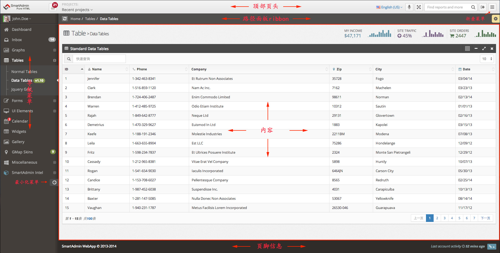

文档 > 页面结构> 介绍
页面整体结构

代码结构
<!DOCTYPE html>
<html lang="zh-CN">
<head>
[HEAD_INFO]
</head>
<body class="">
[#LOGO]
[AJAX_DROPDOWN]
[PROJECTS_DROPDOWN]
[ICONS_AND_SEARCH]
[BREAD_CRUMB]
[PAGE_CONTENTS]
[METRO_SHORTCUT]
[所有页面的js脚本]
</body>
</html>
HEAD_信息
<head>SmartAdmin </head>
HEADER(页头信息)
 21
[JUSTIFIED_BUTTONS]
[DROPDOWN_CONTENT]
Last updated on: 12/12/2013 9:43AM
Projects: Recent projects
21
[JUSTIFIED_BUTTONS]
[DROPDOWN_CONTENT]
Last updated on: 12/12/2013 9:43AM
Projects: Recent projects
导航菜单
主要内容面板
[YOUR_CONTENT_HERE]